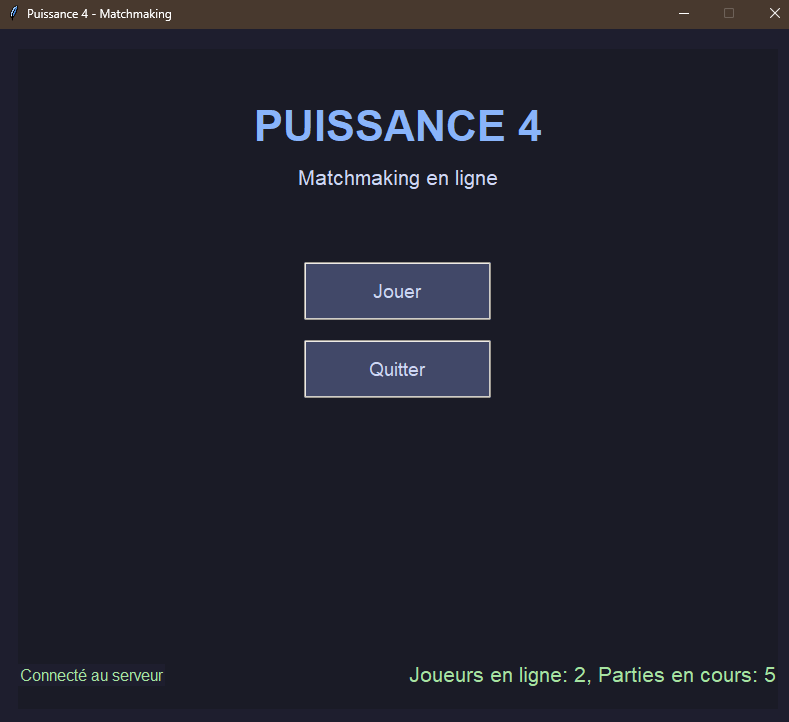
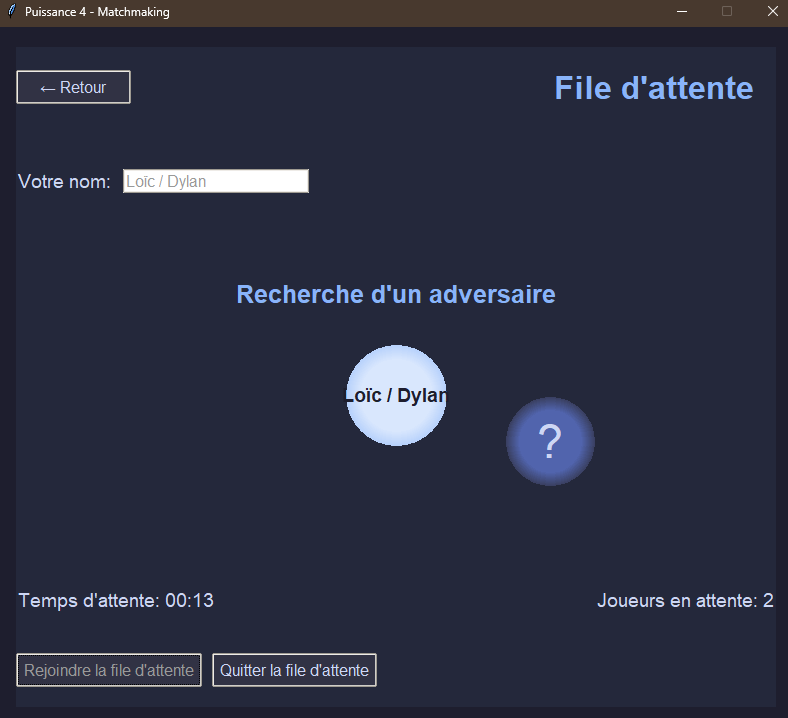

Dylan Arlin
Mes Projets Capturés
PokéShop - Plateforme de E-Commerce
PokéShop est un projet de groupe d'une application web de commerce électronique développée en PHP, offrant une expérience d'achat en ligne complète et intuitive. Le but est de pouvoir vendre et acheter des pokemon facilement.


MétéoCRS
Le but de ce projet de groupe est de créer une application web météorologique avec comme base un fichier CSV contenant des données météorologiques. De plus il nous était demander de concevoir un système de machine learning pour prédire les conditions météorologiques futures.


Puissance4
Un projet de groupe de jeu de Puissance 4 en ligne avec système de matchmaking, permettant à des joueurs de s'affronter en temps réel via Internet. Le projet comprend un serveur, un client avec interface graphique animée et une base de données.
 
Projet IoT – Voiture Miniature Autonome & Télécommandée
Ce projet de groupe en IoT a pour but de concevoir et programmer une voiture miniature connectée capable : de réaliser un parcours autonome prédéfini ; d’être contrôlée à distance via une manette sans fil connectée en Wi-Fi. L’ensemble du système repose sur deux microcontrôleurs ESP32 : l’un embarqué dans la voiture (serveur) ; l’autre dans la manette (client).
Y-Pokeverse
Y-Pokeverse est un projet en cours de développement sur Unity, visant à recréer l’expérience d’un jeu de type Pokémon. Le projet est actuellement à un stade précoce mais déjà fonctionnel pour les combats et la zone de départ.
Mes Capacités Spéciales
Mon Parcours d'Entraînement
Ynov Campus
Septembre 2023 - Juin 2026
Contactez le Dresseur
🔗 GitHub